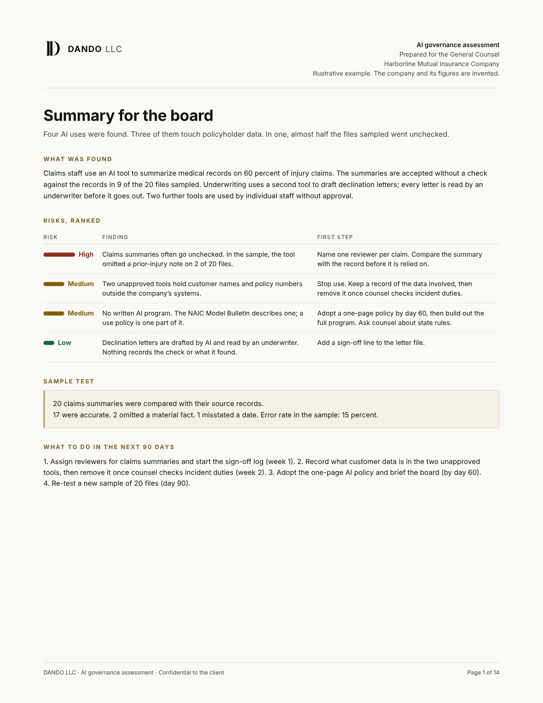

AI governance assessment
A look at where your team uses AI, and whether the people who review its work would catch a mistake.
A written report, plain enough for a board member, that ranks each problem by risk and says what to fix first. I quote the fee after the 30-minute call, once the scope is clear.
For law firms and legal teams, I sign a confidentiality agreement before seeing any client files and work on a sample you choose. When the engagement ends, I return or delete files as our agreement provides, subject to any legal hold.
- Which AI tools your team uses, and for what
- What data goes into each tool, and whether it should
- How risky each use is, and which few uses need a named reviewer
- Who reviews each tool’s work, and whether they could catch a mistake
- A scored sample of the AI’s work, using a method from my published research
- Whether your outside law firms and vendors use AI on your work
- How your team’s AI review compares with published frameworks and guidance
The comparison uses:
- The National Institute of Standards and Technology (NIST) AI Risk Management Framework
- The National Association of Insurance Commissioners (NAIC) Model Bulletin on the use of AI systems by insurers (the model text, not any state’s version)
- American Bar Association Formal Opinion 512, on lawyers’ use of AI tools
- Federal Trade Commission business guidance on AI
- The European Union AI Act, as a reference point for governance practice
The comparison shows how your team’s review of AI work lines up with these frameworks and where your process has gaps. It is not a legal opinion and does not say whether you comply with any law or regulation. Questions of legal compliance, including how any state or foreign law applies to you, are for your legal counsel, and I can work with your counsel on them.

Read the example report as text
AI governance assessment. Prepared for the General Counsel, Harborline Mutual Insurance Company. Illustrative example. The company and its figures are invented.
Summary for the board. Four AI uses were found. Three of them touch policyholder data. One has no human review that could catch a mistake.
What was found. Claims staff use an AI tool to summarize medical records on 60 percent of injury claims. The summaries are accepted without a check against the records in 9 of the 20 files sampled. Underwriting uses a second tool to draft declination letters; every letter is read by an underwriter before it goes out. Two further tools are used by individual staff without approval.
Risks, ranked.
- High. Claims summaries go unreviewed. In the sample, the tool omitted a prior-injury note on 2 of 20 files. Fix first: name one reviewer per claim, and compare the summary with the record before it is relied on.
- Medium. Two unapproved tools hold customer names and policy numbers outside the company’s systems. Fix first: stop use. Keep a record of the data involved, then remove it once counsel checks incident duties.
- Medium. No written AI program. The NAIC Model Bulletin describes one; a use policy is one part of it. Fix first: adopt a one-page policy by day 60, then build out the full program. Ask counsel about state rules.
- Low. Declination letters are drafted by AI and read by an underwriter. Nothing records the check or what it found. Fix first: add a sign-off line to the letter file.
Sample test. 20 claims summaries were graded against their source records using REASON, a legal-reasoning rubric adapted for this test. 17 were accurate. 2 omitted a material fact. 1 misstated a date. Error rate in the sample: 15 percent.
What to do in the next 90 days. Assign reviewers for claims summaries and start the sign-off log (week 1). Record what customer data is in the two unapproved tools, then remove it once counsel checks incident duties (week 2). Adopt the one-page AI policy and brief the board (by day 60). Re-test a new sample of 20 files (day 90).